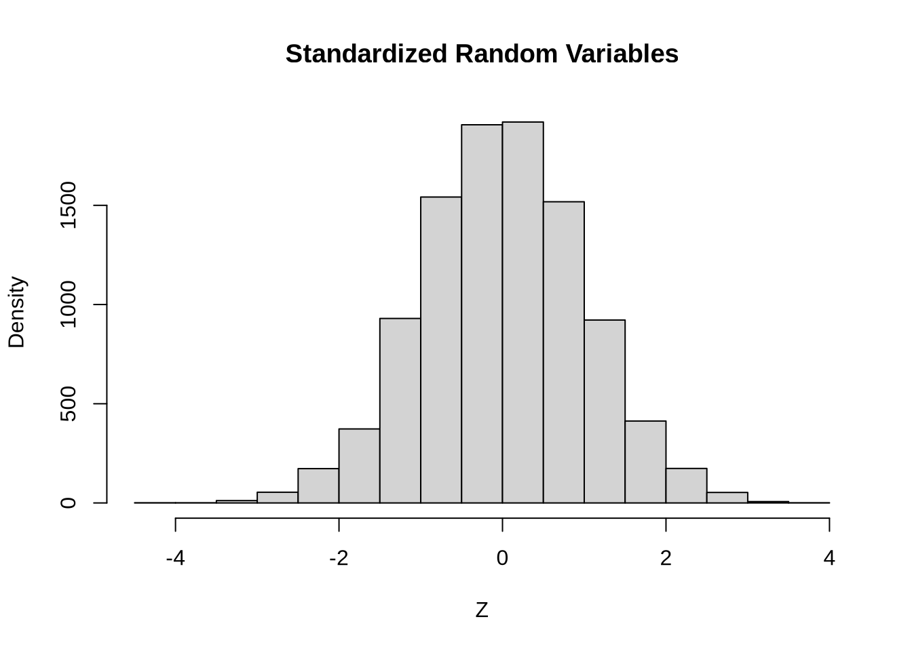
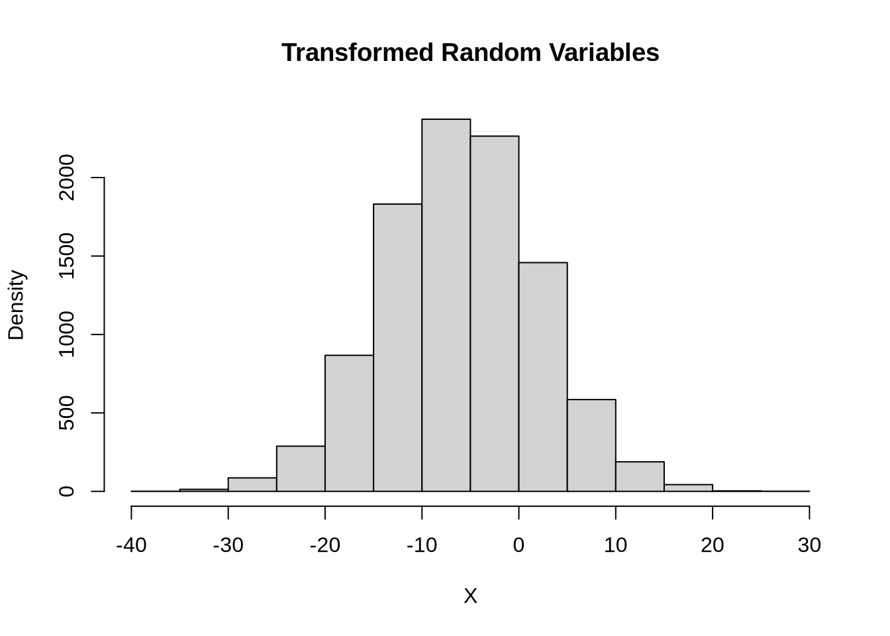

set.seed(100)
n11a <- 10000
mu11a <- 10
sigma11a <- 5
x11a <- rnorm(n11a, mu11a, sigma11a)Normal Distribution
Question 1A (3 points)
The code below generates normal random variables with a mean of \(\mu = 10\) and a standard deviation of \(\sigma = 5\). First, standardize these so that they follow a normal distribution with mean \(\mu = 0\) and standard deviation \(\sigma = 1\).
In the code block below, compute the mean and standard deviation of the standardized data and then create a histogram of the standardized data.
set.seed(100)
x11a_standardized <- (x11a - mu11a)/sigma11a
mean(x11a_standardized)[1] 0.00387737sd(x11a_standardized)[1] 0.9947006hist(x11a_standardized, main = "Standardized Random Variables",
xlab = "Z", ylab = "Density")
Question 1B (3 points)
The code below generates standard normal random variables.
set.seed(100)
n <- 10000
z11b <- rnorm(n)In the code block below, transform these data so that they are normally distributed with mean \(\mu = -6\) and standard deviation \(\sigma = 8\). Then create a histogram of the transformed data.
set.seed(100)
mu11b <- -6
sigma11b <- 8
z11b_transformed <- z11b*sigma11b + mu11b
mean(z11b_transformed)[1] -5.968981sd(z11b_transformed)[1] 7.957605hist(z11b_transformed, main = "Transformed Random Variables",
xlab = "X", ylab = "Density")
Question 2 (4 points)
The code below creates two data frames: df_A, which contains names and math scores for class A, and df_B, which contains names and math scores for class B. You are told that these scores come from normal distributions. The population mean and standard deviation for class A are \(\mu = 81\) and \(\sigma = 10\) and the mean and standard deviation for class B are \(\mu = 83\) and \(\sigma = 7\).
students_A <- c("Aisha", "Hiroshi", "Miguel", "Priya", "Elias", "Fatima",
"Luca", "Zhang Wei", "Amara", "Omar", "Sofia", "Kwame",
"Leila", "Rafael", "Saanvi", "Darius", "Yuki", "Nia",
"Ibrahim", "Lucia")
scores_A <- c(75, 81, 79, 89, 81, 83, 74, 87, 72, 76, 81, 81, 78, 87, 81, 80, 76, 85, 71, 103)
df_A <- data.frame(Name = students_A, score = scores_A)
students_B <- c("Jasmine", "Kenji", "Mateo", "Ananya", "Noah", "Zainab",
"Felix", "Cheng", "Nadia", "Malik", "Elena", "Tariq",
"Simone", "Diego", "Aarav", "Xavier", "Mei", "Lina",
"Omar", "Isla")
scores_B <- c(80, 88, 85, 88, 77, 80, 78, 85, 75, 85, 82, 95, 82, 82, 78, 81, 84, 86, 90, 90)
df_B <- data.frame(Name = students_B, score = scores_B)
df_A Name score
1 Aisha 75
2 Hiroshi 81
3 Miguel 79
4 Priya 89
5 Elias 81
6 Fatima 83
7 Luca 74
8 Zhang Wei 87
9 Amara 72
10 Omar 76
11 Sofia 81
12 Kwame 81
13 Leila 78
14 Rafael 87
15 Saanvi 81
16 Darius 80
17 Yuki 76
18 Nia 85
19 Ibrahim 71
20 Lucia 103df_B Name score
1 Jasmine 80
2 Kenji 88
3 Mateo 85
4 Ananya 88
5 Noah 77
6 Zainab 80
7 Felix 78
8 Cheng 85
9 Nadia 75
10 Malik 85
11 Elena 82
12 Tariq 95
13 Simone 82
14 Diego 82
15 Aarav 78
16 Xavier 81
17 Mei 84
18 Lina 86
19 Omar 90
20 Isla 90Which student performed better on the exam relative to their peers, Darius in class A or Jasmine in class B? Use the code block below for any calculations.
mu_A <- 81
sigma_A <- 10
mu_B <- 83
sigma_B <- 7
z_Darius <- (80 - mu_A)/sigma_A
z_Jasmine <- (80 - mu_B)/sigma_B
z_Darius[1] -0.1z_Jasmine[1] -0.4285714Darius performed better because he has a higher z-score.
Why did one perform better than the other relative to their peers given that they both got the same score?
Even though they have the same score, the mean score in Jasmine’s class is higher and the standard deviation is smaller so Jasmine is more standard deviations below the her class’s mean than Darius is below his class’s mean.
Question 3 (3 points)
Let \(X \sim N(50, 4)\). In the code block below, compute the following probabilities:
- \(P(X < 45)\)
- \(P(X > 52)\)
- \(P(45 < X < 52)\)
mu13 <- 50
sigma13 <- 4
# You could do it this way
pnorm(45, mu13, sigma13)[1] 0.10564981-pnorm(52, mu13, sigma13)[1] 0.3085375pnorm(52, mu13, sigma13) - pnorm(45, mu13, sigma13)[1] 0.5858127# Or you could do it this way
pnorm((45-mu13)/sigma13)[1] 0.10564981-pnorm((52-mu13)/sigma13)[1] 0.3085375pnorm((52-mu13)/sigma13) - pnorm((45-mu13)/sigma13)[1] 0.5858127Question 4 (4 points)
Let \(X \sim N(500, 150)\). In the code block below, compute the following percentiles.
- \(95^{th}\) percentile
- \(10^{th}\) percentile
- \(1^{st}\) and \(3^{rd}\) quartiles
- The median
mu14 <- 500
sigma14 <- 150
# You could do it this way
qnorm(0.95, mu14, sigma14)[1] 746.728qnorm(0.1, mu14, sigma14)[1] 307.7673qnorm(0.25, mu14, sigma14)[1] 398.8265qnorm(0.75, mu14, sigma14)[1] 601.1735qnorm(0.5, mu14, sigma14)[1] 500# Or you could do it this way
qnorm(0.95)*sigma14 + mu14[1] 746.728qnorm(0.1)*sigma14 + mu14[1] 307.7673qnorm(0.25)*sigma14 + mu14[1] 398.8265qnorm(0.75)*sigma14 + mu14[1] 601.1735qnorm(0.5)*sigma14 + mu14[1] 500